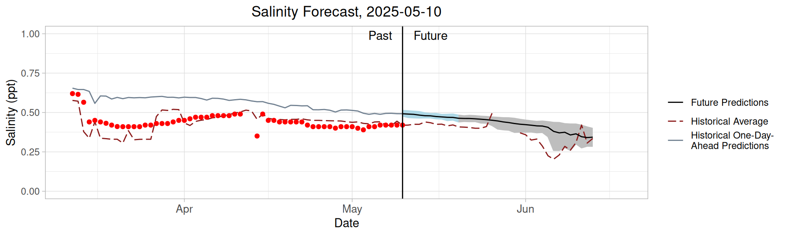
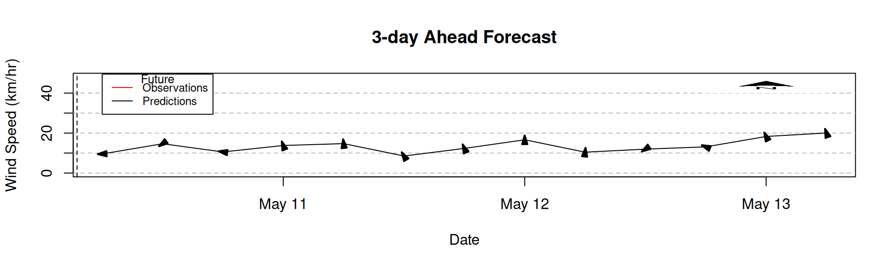
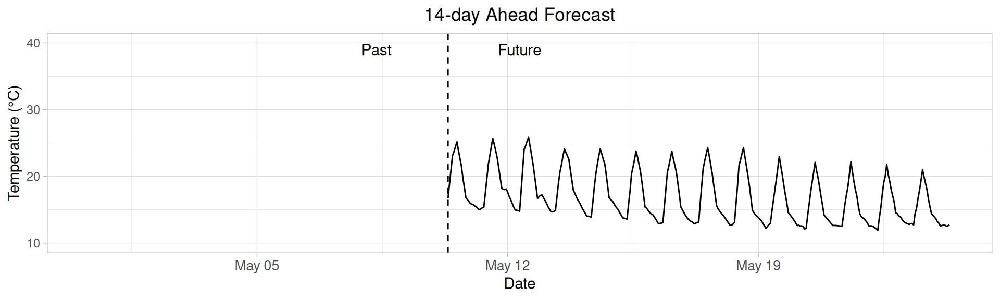

── Attaching core tidyverse packages ──────────────────────── tidyverse 2.0.0 ──
✔ dplyr 1.1.4 ✔ readr 2.1.5
✔ forcats 1.0.0 ✔ stringr 1.5.1
✔ ggplot2 3.5.1 ✔ tibble 3.2.1
✔ lubridate 1.9.4 ✔ tidyr 1.3.1
✔ purrr 1.0.4
── Conflicts ────────────────────────────────────────── tidyverse_conflicts() ──
✖ dplyr::filter() masks stats::filter()
✖ dplyr::lag() masks stats::lag()
ℹ Use the conflicted package (<http://conflicted.r-lib.org/>) to force all conflicts to become errors
library(arrow)
Attaching package: 'arrow'
The following object is masked from 'package:lubridate':
duration
The following object is masked from 'package:utils':
timestamp
library(bslib)
Attaching package: 'bslib'
The following object is masked from 'package:utils':
page
library(bsicons)library(leaflet)library(oce)
Loading required package: gsw
build_day <-Sys.Date() source('R/climatology_calc.R')source('R/future_trend_calc.R')source('R/historic_trend_calc.R')### READ IN INSITU TARGETSlake_directory <-getwd()options(timeout=300)insitu_obs_url<-"https://renc.osn.xsede.org/bio230121-bucket01/flare/targets/CANN/CANN-targets-insitu.csv"obs_cleaned <- readr::read_csv(insitu_obs_url) |>filter(variable %in%c('TEMP','salt'), depth ==1.5) |>##insitu sensors and met #dplyr::filter(is.na(inflow_name)) |> collect() |> lubridate::with_tz(datetime, tzone ="Australia/Perth")
Rows: 9784 Columns: 5
── Column specification ────────────────────────────────────────────────────────
Delimiter: ","
chr (2): site_id, variable
dbl (2): depth, observation
dttm (1): datetime
ℹ Use `spec()` to retrieve the full column specification for this data.
ℹ Specify the column types or set `show_col_types = FALSE` to quiet this message.
$icon
[1] "arrow-bar-right"
$color
[1] "primary"
$value
[1] "No Change"
Row
This material is based upon work supported by the National Science Foundation under Grant OISE-2330211. Any opinions, findings, and conclusions or recommendations expressed in this material are those of the author(s) and do not necessarily reflect the views of the National Science Foundation.
We would like to acknowledge Water Data SA for providing observational data for the forecasts presented on this dashboard.
Page last updated on 2025-03-17
Water Quality Forecasts
This page contains information about the water quality of Canning Weir Pool water quality forecasts are created using the FLARE modeling framework deployed by the VT Center for Ecosystem Forecasting. Observational data is provided by Water Data SA.
All forecasts are valid for 8:00am AWST (00:00 UTC). Red dots indicate in-situ observations. The black line indicates the mean forecast predictions (both past and future), with uncertainty provided for future forecasts. Uncertainty is separated into sections of higher confidence (blue) and lower confidence (grey) based on predicted days ahead. The climatology average is also included to provide a comparison of the current observations and forecast predictions against typical conditions for this time period.


Weather Forecasts
This page contains information about weather in the Canning Weir Pool area. Weather forecasts shown here are provided by the U.S. based NOAA GEFS model, which is used as input for the water quality forecasts. Local weather forecasts can be accessed from the Bureau of Meteorology. Observations are provided by Water Data SA.
All forecasts are valid for 10:30am ACDT (00:00 UTC). The red line represents observed wind speed with red arrows indicating the wind direction at each available in-situ observation. The black line represents the mean forecast predictions for wind speed with black arrows indicating the wind direction at each prediction. Both past and future wind predictions are provided. The observations and predictions shown represent six-hour averages across the time period.

Learn more
See below for additional information about Lake Alexandrina, information on how to access the forecasts for this site, and information about the Center for Ecosystem Forecasting at Virginia Tech.
::: {.card title = “Documentation for Canning Wier Pool Forecasts”}
We provide the full code repository for Canning Weir Pool forecasts here.
We maintain and deploy the FLARE model framework to create our water quality forecasts. More information on the FLARE project can be found here
:::
::: {.card title = “Relevant Research from the Center for Ecosystem Forecasting”}